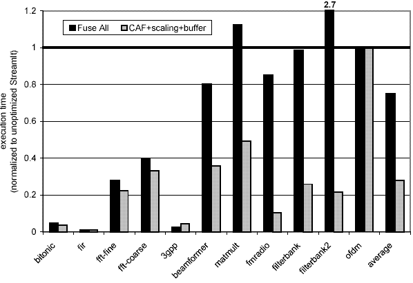
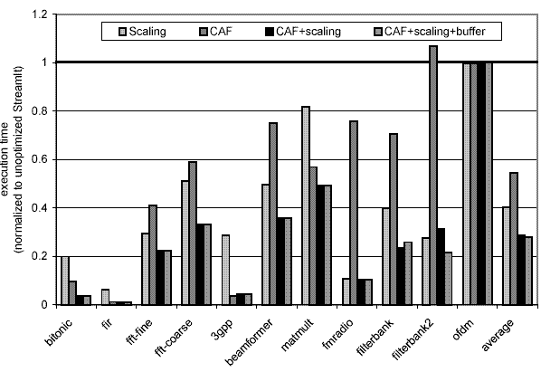

The StreamIt programming language enables rapid development of digital signal processing (DSP) and other streaming programs in a high-level programming language[1,2]. The StreamIt optimizing compiler enables powerful transformations for linear filters[3] as well as parallel execution on communication-exposed architectures[4]. Our research[5] shows that a stream compiler can use the information found in the stream program to automatically generate cache-optimized executables for execution on a uniprocessor. These optimizations can be used to generate code that runs faster and consumes less energy on an embedded processors such as StrongARM.
In contrast to desktop systems, embedded systems usually have only a single level of cache and every cache miss results in a slow memory access. To achieve good performance, an embedded program must have a very low cache-miss rate.
A stream program consists of a graph of actors that are connected via communication channels. Each channel connects two actors, where one is a producer and the other is a consumer. Each actor examines and consumes a fixed number of items from its input connection and produces a fixed number of items onto its output connection during every execution of the actor.
Three novel transformations introduced by our research are: cache-aware fusion (CAF) of actors, execution scaling of the actors, and improved buffer management. The largest speedup is achieved when we combine cache-aware fusion with execution scaling and optimized buffer management.
Cache-aware fusion combines several adjacent actors and replaces them with a single new actor. This allows the compiler to perform optimizations across actor boundaries. For example, intermediate values that a source passes to a destination over a communication channel can be register allocated if the two actors have been combined using fusion. Register allocation leads to reduction of memory accesses that the program issues, reducing the memory bottleneck. However, our algorithm performs fusion judiciously, as excessive fusion can result in combined actors that exceed the size of the instruction cache.
Execution scaling executes each actor multiple times before moving on to the next one. This scheduling freedom is an aspect of stream programs, where the graph of actors is executing in an infinite loop; actors can fire out of order so long as they fire in the same ratio at steady state. Execution scaling reduces the number of cache misses for accessing the instructions of the scaled actor (if all code of the actor fits into the instruction cache) and it also reduces the number of cache misses for accessing the state of the scaled actor (if all state of the actor fits into the data cache).
Some actors examine many items on the input channel but only consume (remove) a few items. In such cases, the stream compiler has to decide how the live items should be buffered. We examine several alternative methods for buffer management such as modulo indexing and shifting the live items within a large buffer.
Our research has shown that to execute high level stream programs on an embedded processor such as StrongARM (used in many handheld devices) one has to take into account the caching behavior of the generated code. CAF and optimized buffer management reduces the number of memory accesses issued by the program. Execution scaling reduces the number of cache misses. A combination of all of the mentioned optimizations reduces the memory bottleneck and results in a substantial speedup for stream programs on embedded processors. The performance improvements offered by our technique are summarized in the graphs below.

Figure 1. Performance of cache-oblivious "full fusion" versus our cache optimizations (CAF+scaling+buffer), normalized to unoptimized code on a StrongARM.

Figure 2. Impact of each of our cache optimizations---cache aware fusion, execution scaling, and buffer management---relative to unoptimized code on a StrongARM.
[1] William Thies, Michal Karczmarek, and Saman Amarasinghe. StreamIt: A Language for Streaming Applications. In Proceedings of the 2002 International Conference on Compiler Construction. Grenoble, France, April, 2002.
[2] Kimberly Kuo, Rodric Rabbah, and Saman Amarasinghe.
A Productive Programming Environment for Stream Computing.
In
[3] Andrew A. Lamb, William Thies, and Saman Amarasinghe. Linear Analysis and Optimization of Stream Programs. In Proceedings of the SIGPLAN '03 Conference on Programming Language Design and Implementation, San Diego, CA, June, 2003.
[4] Michael I. Gordon, William Thies, Michal Karczmarek, Jasper Lin, Ali S. Meli, Andrew A. Lamb, Chris Leger, Jeremy Wong, Henry Hoffmann, David Maze, and Saman Amarasinghe. In Proceedings of the Tenth International Conference on Architectural Support for Programming Languages and Operating Systems, San Jose, CA, October 2002.
[5]Janis Sermulins, William Thies, Rodric Rabbah, and Saman Amarasinghe. Cache Aware Optimization of Stream Programs. In Proceedings of the 2005 Conference on Languages, Compilers, and Tools for Embedded Systems, Chicago, Illinois, June 2005.